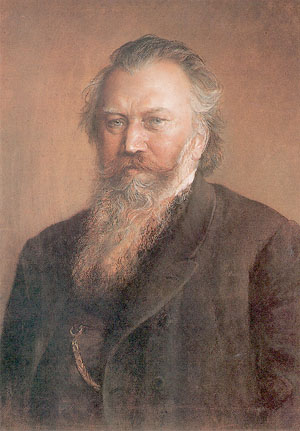

周末音乐会3：勃拉姆斯最好的交响乐，向古典主义的致敬！
2006/8/4 18:06:37

古典主义在舒伯特之后，基本就没有了。当然如勃拉姆斯，依然不合时宜地怀着对古典主义的憧憬，但也只是一个梦了。第四交响乐，勃拉姆斯最好的交响乐，是向古典主义一个深深的致敬！勃拉姆斯在他的第一交响乐中，甚至在第四乐章用上欢乐颂类似的音调来表示对古典主义的缅怀，但那里，勃拉姆斯自己有着被缚的感觉，他的第一交响乐是绝好的作品，但不能算是伟大的。其后的第二、三，没有了太大的野心，反而伟大了。当然，最牛的还是他的第四交响乐，这里有点重新回到第一中的缅怀，然而这次，他是如此的自由，如同站在古典主义殿堂的穹顶下，反射着自己的光芒，两相交映着，人神合一去了。
这次音乐会的大餐是下半场勃拉姆斯第四交响乐，而上半场的一点不比之弱。第一首是贝多芬最好的序曲，“爱格蒙德”序曲，有着最古典的形式与最火热的激情，其中的平衡感达到了最高的水平，这也是历史上形式和内容最完美的序曲作品了，唯一能和她比较的大概就是贝多芬自己的“莱昂诺拉”第三号序曲，然而总觉得这更纯粹，从作曲技巧上看，材料更简练，把最简单的材料发挥到了极致。
第二首是舒伯特的F大调四手联弹幻想曲，这是所有四手联弹中最牛的作品之一了，唯一比她厉害的大概就是舒伯特自己的大二重奏，那其实就是一交响乐，就不比了。这有着更多浪漫主义的感情，形式上也不算是很古典的，但其内心依然是古典的，其中的纯正如天籁般不可凑泊，对于这样的作品，那以后就再没有人能写出来。
第三首又是贝多芬的，春天奏鸣曲，一个比较通俗的作品，之所以比相同形式的“克鲁采”要感觉分量轻一点，只是因为作品的基调比较轻松，是贝多芬最温暖的作品之一。其实，轻松温暖的作品是很难写的，最主要是很容易就俗了，滑了，但这里绝对没有，里面有着最纯正的古典主义的平衡。
用贝多芬和舒伯特来映衬勃拉姆斯，这哥们也够面子的了。但这也是他所应得的，贝多芬和舒伯特都是勃拉姆斯最尊敬的人，他还曾为舒伯特音乐的收集整理竭尽全力。另外，如果各位喜欢听，也要好好去本ID的音乐播客里发表评论，评论多了，上传空间就大了，这样满屋的音乐才有空间搬上来。各位就看着办吧！
请先把其他背景音乐关闭。